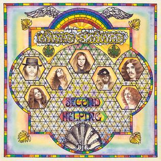

Day 8

Lynyrd Skynyrd ◆ The Ballad of Curtis Loew ◆ Second Helping ◆ 1974
讲一个老黑人的故事，Lynyrd Skynyrd 还有一首 “Sweet Home Alabama” 很有名，以后有时间写。
Well, I used to wake the mornin'
Before the rooster crowed
Searchin' for soda bottles
To get myself some dough
Brought 'em down to the corner
Down to the country store
Cash 'em in, and give my money
To a man named Curtis Loew
Old Curt was a black man
With white curly hair
When he had a fifth of wine
He did not have a care
He used to own an old Dobro
Used to play it 'cross his knee
I'd give old Curt my money
He'd play all day for me
Play me a song
Curtis Loew, Curtis Loew
Well, I got your drinkin' money
Tune up your Dobro
People said he was useless
Them people all were fools
'Cause Curtis Loew was the finest picker
To ever play the blues
He looked to be sixty
And maybe I was ten
Mama used to whoop me
But I'd go see him again
I'd clap my hands, stomp my feet
Try to stay in time
He'd play me a song or two
Then take another drink of wine
Play me a song
Curtis Loew, Curtis Loew
Well, I got your drinkin' money
Tune up your Dobro
People said he was useless
Them people all were fools
'Cause Curtis Loew was the finest picker
To ever play the blues
Yes, sir
On the day old Curtis died
Nobody came to pray
Ol' preacher said some words
And they chunked him in the clay
Well, he lived a lifetime
Playin' the black man's blues
And on the day he lost his life
That's all he had to lose
Play me a song
Curtis Loew, hey Curtis Loew
I wish that you was here so
Everyone would know
People said he was useless
Them people all were fools
'Cause Curtis you're the finest picker
To ever play the blues